Shot by Rafael Lee.
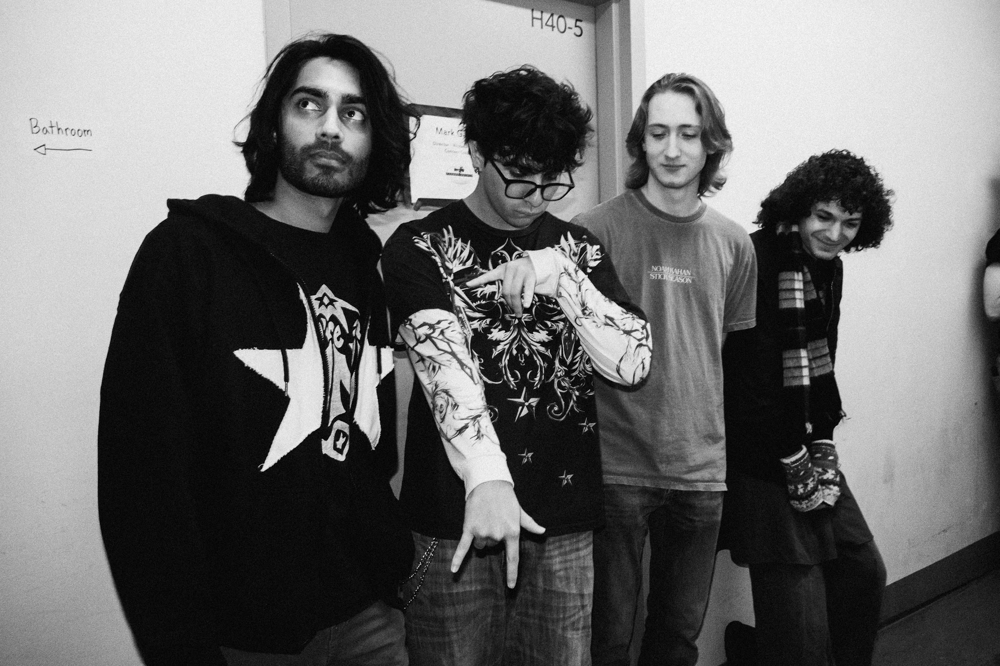
Stevens Battle of the Bands.

Designs by Luke Magette


11/23/24 - Neumann Leathers, Hoboken shot by Rafael Lee. @_rafael_lee.
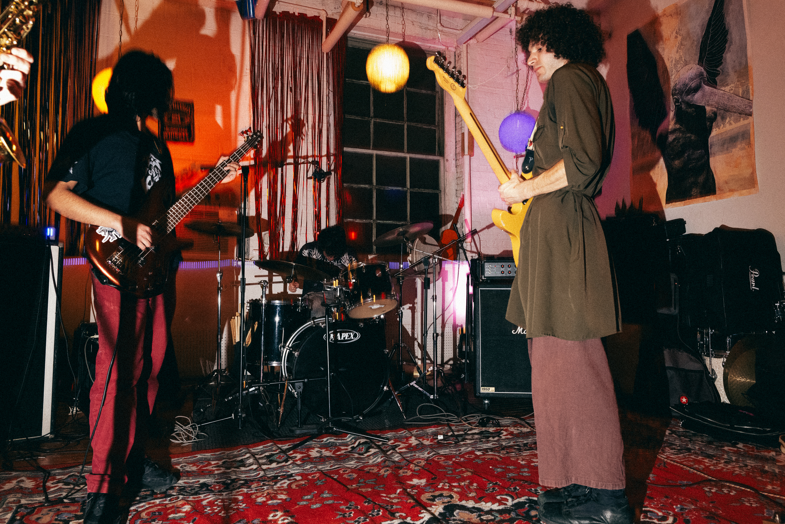

 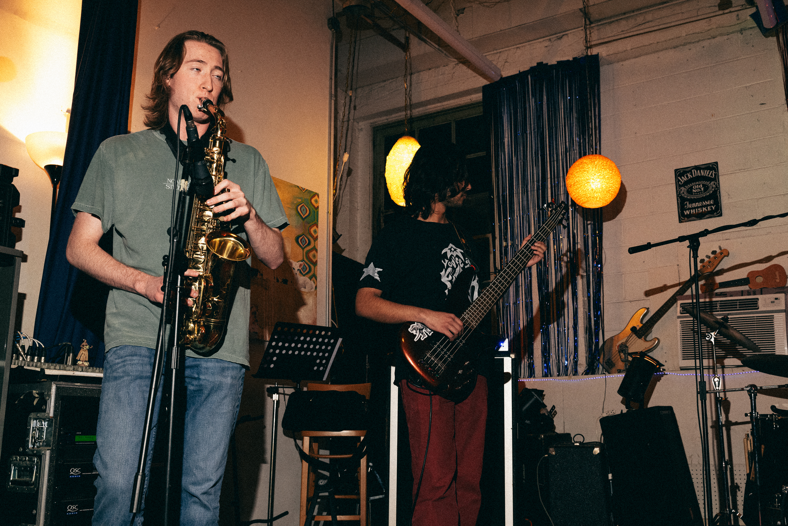
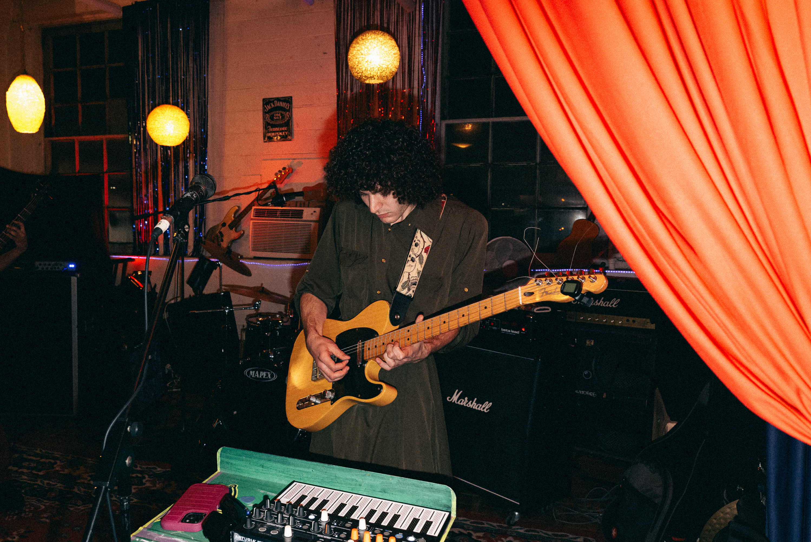
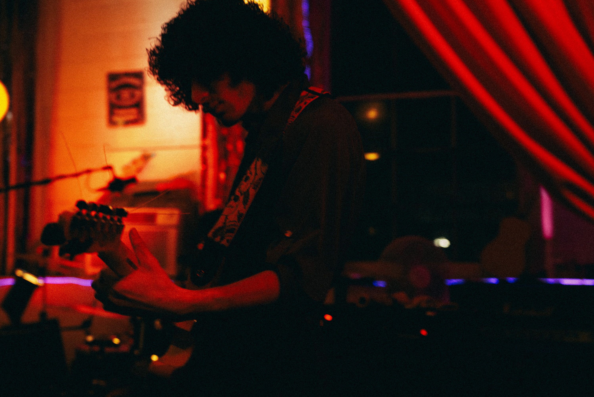
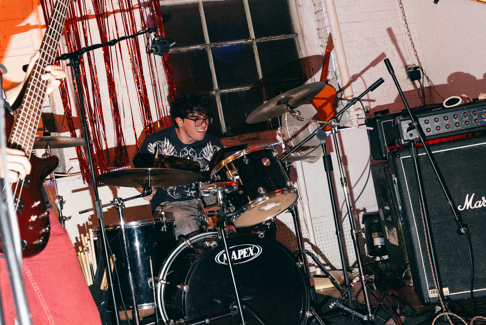
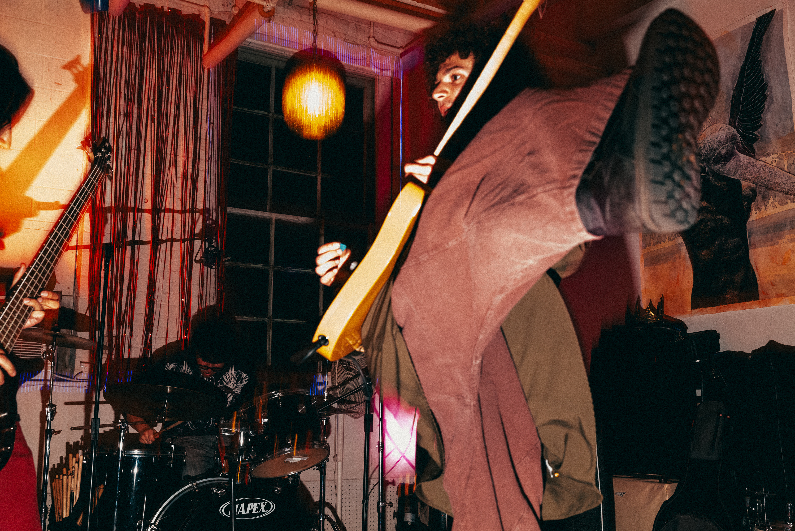
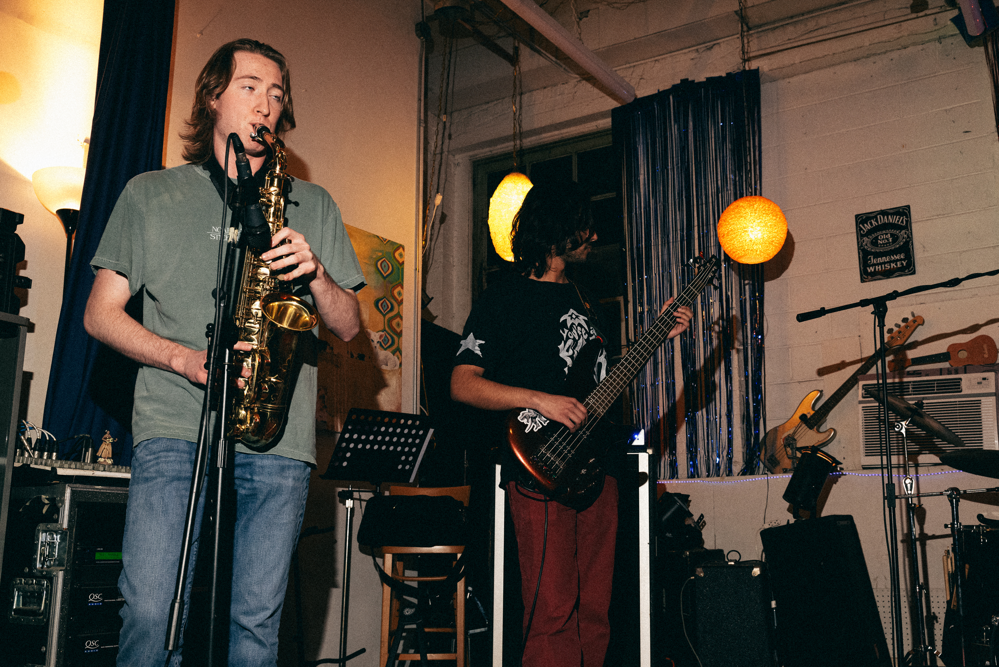
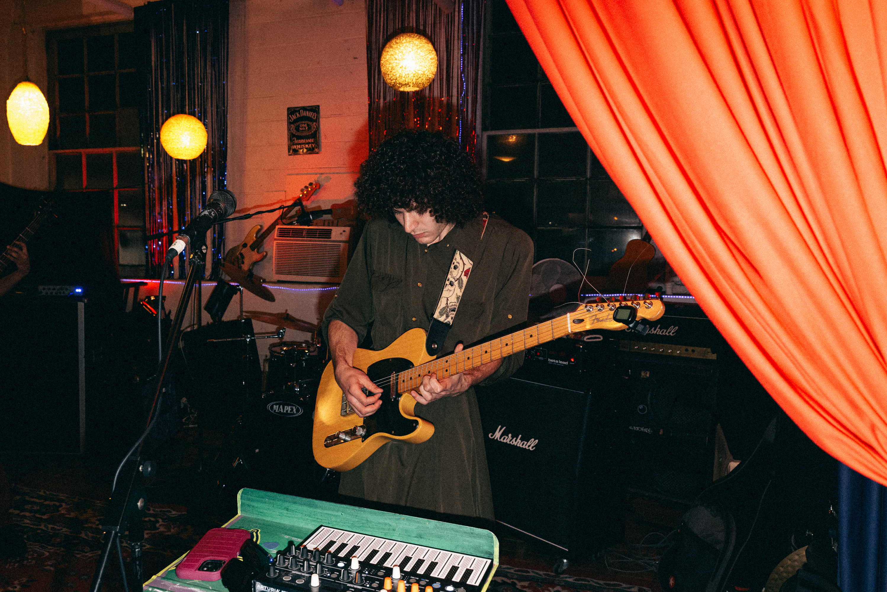
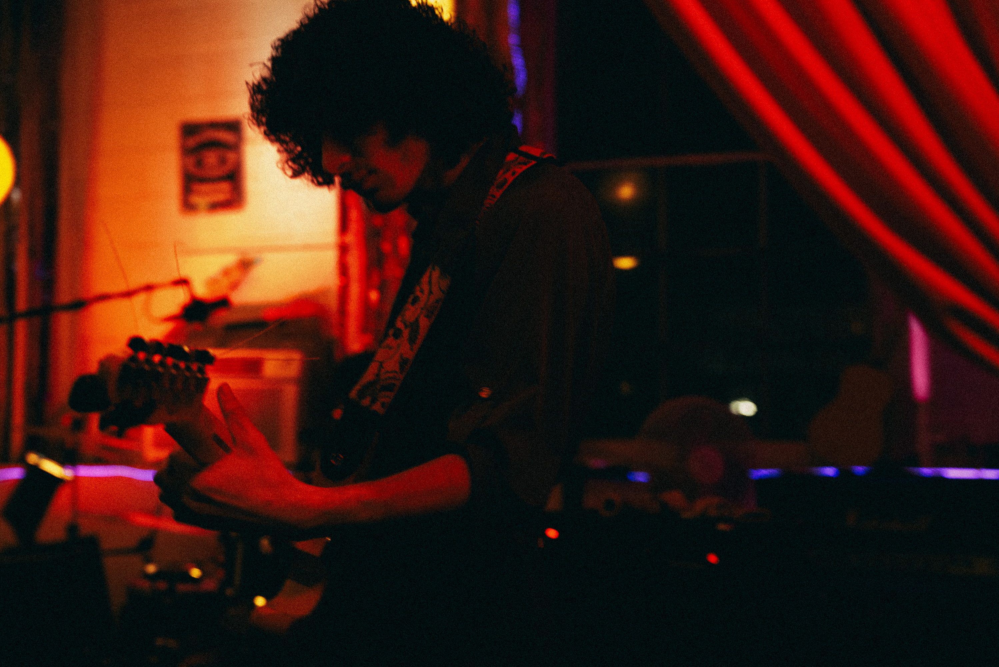
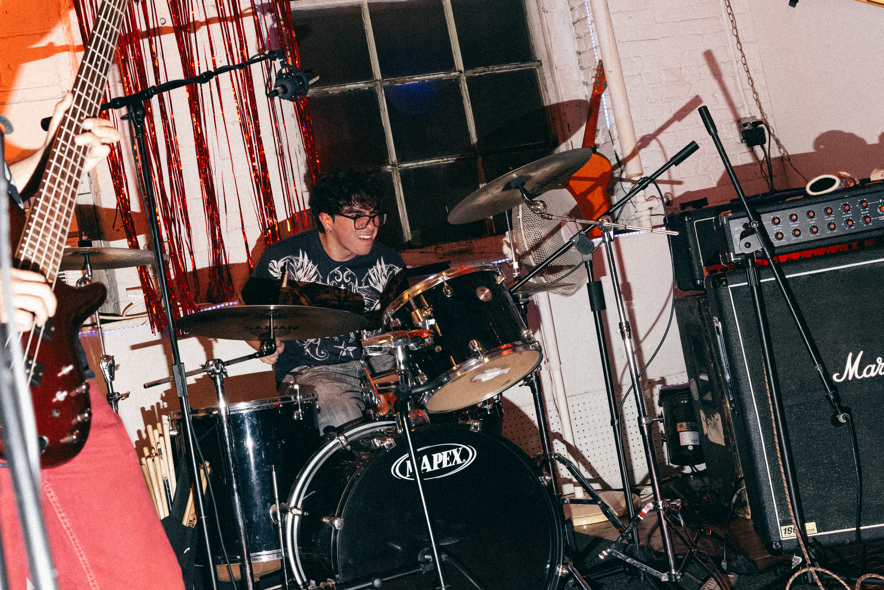
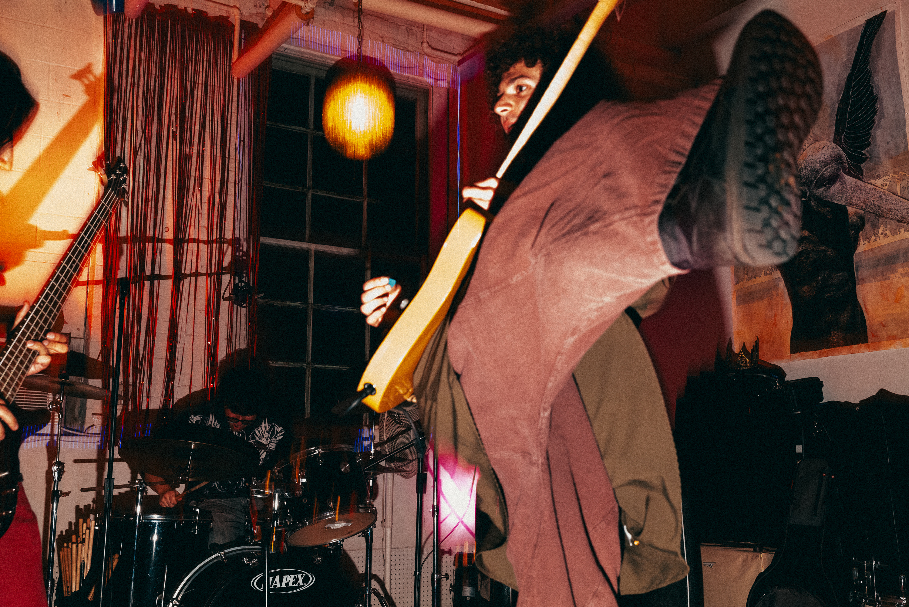
Meditation & Vegetation
Released September 30, 2023
James Hooker - guitar and vox
Sahil Navani - bass guitar
Mikey Brewer - drums and mix engineer
Liam Cunningham - saxophone
Recorded and engineered by Alex Schwindt
Dedicated to the Moon and her Actors
Shwank archive:
4/30/23 Farside Tavern shot by Luke
Pics from Manhattan 4/22/23 by Kaley Fitz.

 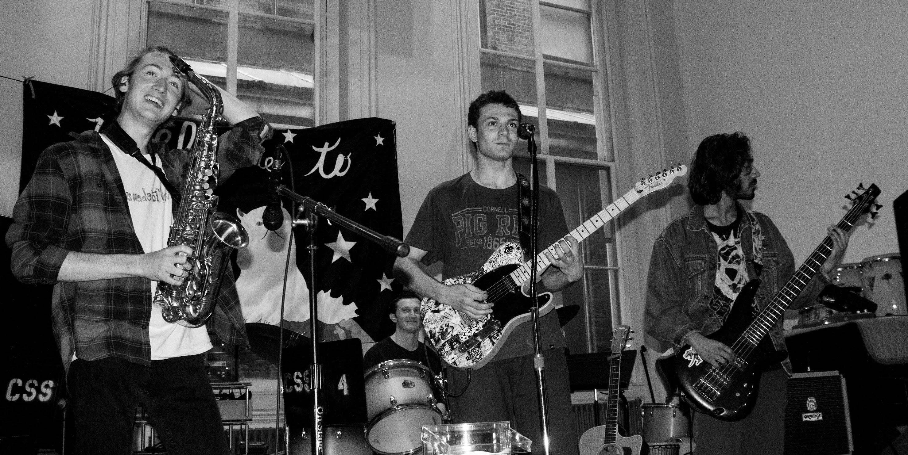
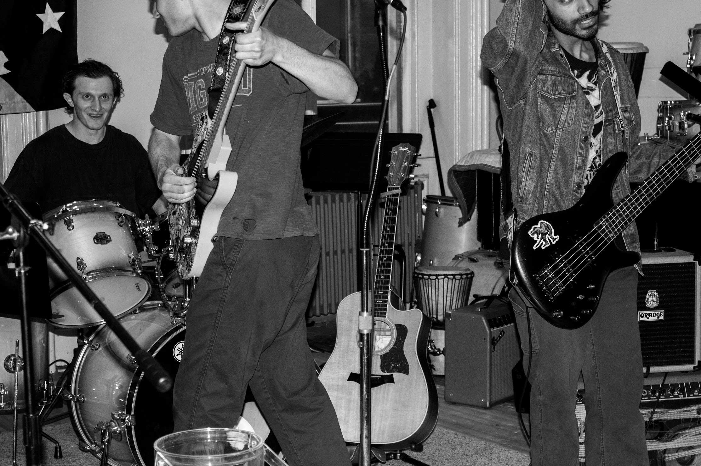
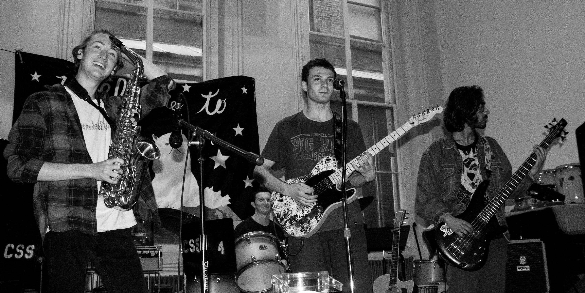
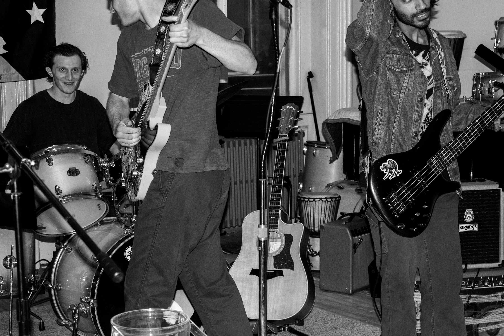